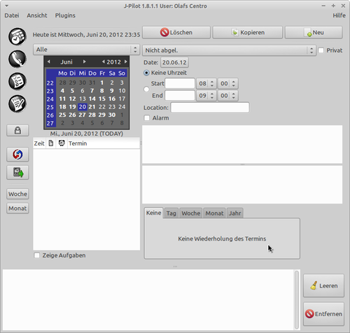

J-Pilot
Dieser Artikel wurde für die folgenden Ubuntu-Versionen getestet:
Ubuntu 14.04 Trusty Tahr
Zum Verständnis dieses Artikels sind folgende Seiten hilfreich:
J-Pilot  ist ein Desktop-Organizer zur Synchronisation von Daten auf einem PDA oder Mobiltelefon mit dem inzwischen nicht mehr weiter entwickelten Betriebssystem Palm OS und deren Bearbeitung auf dem PC.
ist ein Desktop-Organizer zur Synchronisation von Daten auf einem PDA oder Mobiltelefon mit dem inzwischen nicht mehr weiter entwickelten Betriebssystem Palm OS und deren Bearbeitung auf dem PC.
Es ermöglicht unter anderem den Austausch von Daten aus dem Kalender und dem Adressbuch. Außerdem können mit Hilfe von J-Pilot Daten und Programme auf den Palm übertragen werden, sowie Backups des Palm OS-Gerätes auf dem PC gesichert werden.
Installation¶
Für die Programminstallation werden folgende Pakete benötigt [1]:
jpilot (universe)
jpilot-plugins (universe )
 mit apturl
mit apturl
Paketliste zum Kopieren:
sudo apt-get install jpilot jpilot-plugins
sudo aptitude install jpilot jpilot-plugins
Grundkonfiguration¶
Nach erfolgreicher Installation findet man das Programm bei Ubuntu-Varianten mit einem Anendungsmenü unter "Büro -> J-Pilot".
Bevor das Programm gestartet wird, schließt man den Palm mittels Kabels an den PC an. Nun wird J-Pilot zum ersten Mal gestartet. Unter "Datei -> Einstellungen" wird der Reiter "Einstellungen" geöffnet. Hier wird im Punkt "Serielle Schnittstelle" die Adresse der Schnittstelle eingefügt, z.B. usb:.
Besitzt man eine Cradle, die über die serielle Schnittstelle mit dem Rechner verbunden ist, so trägt man dort /dev/ttyS0 für Com1, /dev/ttyS1 für Com2 usw. ein.
Schnittstelle¶
Wird hier nichts eingetragen, verwendet J-Pilot die Einstellung, die das Programm in den Dateien .profile oder .bashrc im Heimatverzeichnis findet. Standardmäßig wird hier /dev/pilot verwendet. Um zu überprüfen, ob die Schnittstelle verfügbar ist, im Terminal [2] Folgendes eingeben:
ls -al /dev/pilot
Conduits einstellen¶
Hat man die richtige Schnittstelle festgelegt, sollten außerdem noch die Conduits von J-Pilot auf die richtige Palm OS-Version eingestellt werden. In den J-Pilot-Einstellungen finden sich unter den Reitern "Datebook", "Address", "Aufgabe" und "Memo" die Umschalter, mit denen festgelegt wird, ob ein Gerät mit Palm OS 5.2.1 oder neuer verwendet werden soll. Mit dieser Palm OS-Version haben sich diese Datenbanken verändert. J-Pilot hat in der Grundeinstellung die älteren Versionen kleiner als Palm OS 5.2.1 ausgewählt, während inzwischen aber die meisten noch im Umlauf befindlichen Palm OS-Geräte wie z.B. Treo- oder Centro-Mobiltelefone, sowie die Tungsten E- und T-Handhelds oder das Lifedrive unter Palm OS 5.4.x laufen dürften. Die Version des eigenen Palm OS-Gerätes findet man im Menü des Palm OS-Launchers unter "Info".
Benutzer installieren¶
Wenn der Palm noch nie benutzt wurde, bzw. nach einem harten Reset, muss dieser noch mit J-Pilot bekannt gemacht werden. Dazu unter "Datei" den Punkt "Benutzer installieren" auswählen, den folgenden Dialog bestätigen und dann einen HotSync ausführen.
Hotsync¶
Um einen Hotsync durchzuführen, muss zunächst J-Pilot gestartet und dort der Hotsync-Button gedrückt werden, bevor der Hotsync-Button auf dem Cradle gedrückt wird. Damit unterscheidet sich J-Pilot von vielen anderen Synchronisations-Lösungen, bei denen der Hotsync vom Palm OS-Gerät aus angestoßen wird.
Programm¶
Das Programm verfügt über einige Hauptkategorien:

| Menü | |
| Hier können Termine verwaltet und mit Zusatzoptionen wie z.B. Erinnerung versehen werden. | |
| Am PC kann problemlos die Adressdatenbank bearbeitet und aktualisiert werden. Dank des Datenaustauschs zwischen den Geräten sind die Adressen immer auf dem neuesten Stand. | |
| Hier können zu erledigende bzw. erledigte Aufgaben eingesehen und editiert werden. | |
| Merkzettel erstellen und verwalten, z.B. Einkaufslisten... | |
| Synchronisation des Palms mit dem PC. | |
| Datensynchronisation und anschließendes Backup der installierten Programme zwecks eventueller Wiederherstellung. Die Daten werden im Heimatverzeichnis im versteckten Ordner ./jpilot abgelegt. Auf diesen Ordner zugreifen und die Dateien ggf. separat auf einem USB-Stick o.ä. sichern. | |
Import/Export von Daten¶
Unter "Datei -> Importieren" bzw. "Datei -> Exportieren" stehen je nach gerade ausgewählter Datenbank zahlreiche Formate zum Im- und Exportieren bereit. So lassen sich zum Beispiel alle (oder auch nur einzelne ausgewählte) Kontaktdaten in gängige Austauschformate (text, csv, vcf, ldif) exportieren, die von praktisch allen E-Mail-Programmen verarbeitet werden können. Damit wird die Adressensammlung vom Palm auch im E-Mail-Client nutzbar und umgekehrt. Entsprechendes gilt für Kalender-Programme.
Programminstallation¶
Unter "Datei -> Installieren" öffnet sich ein neues Fenster, über das Software zur Installation auf dem Palm ausgewählt werden kann. Diese wird beim nächsten Sync auf den Palm übertragen. Es werden die Dateiformate .pdb und .prc unterstützt.
Drucken¶
Unter "Datei -> Drucken" kann die jeweils angewählte Hauptkategorie ausgedruckt werden.
Problembehebung¶
Exit-Status: SYNC_ERROR_OPEN_CONDUIT¶
Sofern die Meldung
"Exit-Status: SYNC_ERROR_OPEN_CONDUIT"
erscheint, sollte man die Übertragungsrate unter "Datei -> Einstellungen -> Einstellungen" verringern.
Gruppenzugehörigkeit¶
Sollte die Synchronisation ohne Fehlermeldung endlos und erfolglos weiterlaufen, ohne dass im Protokoll etwas erscheint, kann es helfen, die Zugehörigkeit des Linux-Benutzers zu den Gruppen "dialout" und "dip" zu kontrollieren. Dies lässt sich mit Administrator-Rechten ggf. in den Benutzereinstellungen nachholen.
Alternativ gibt man im Terminal folgende Befehle ein, wobei BENUTZERNAME durch den gewünschten Linux-Benutzer zu ersetzen ist:
sudo adduser BENUTZERNAME dialout sudo adduser BENUTZERNAME dip

- Erstellt mit Inyoka
-
 2004 – 2017 ubuntuusers.de • Einige Rechte vorbehalten
2004 – 2017 ubuntuusers.de • Einige Rechte vorbehalten
Lizenz • Kontakt • Datenschutz • Impressum • Serverstatus -
Serverhousing gespendet von